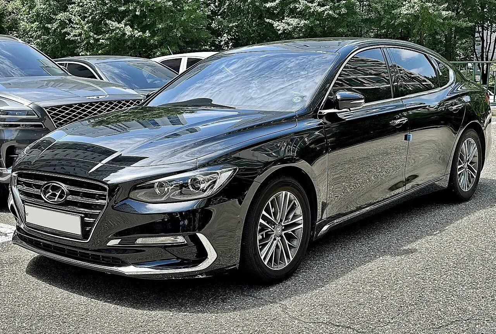
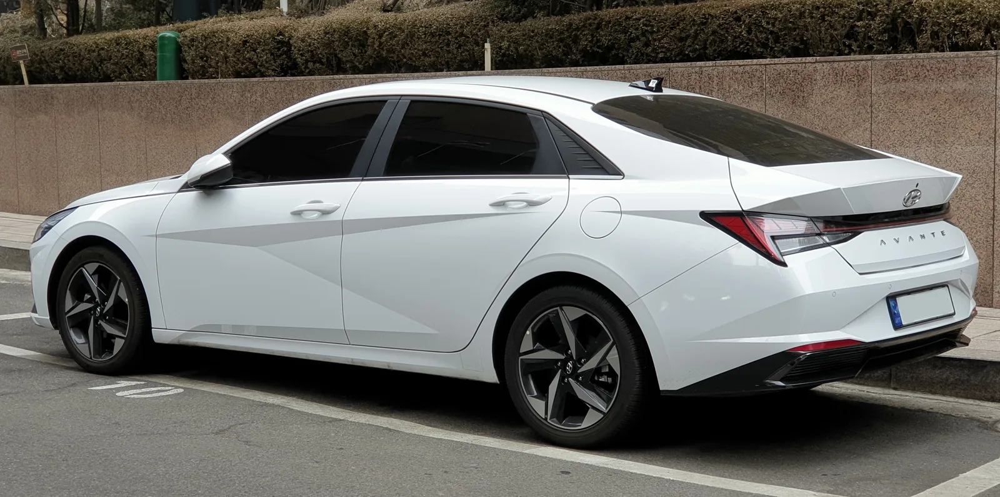
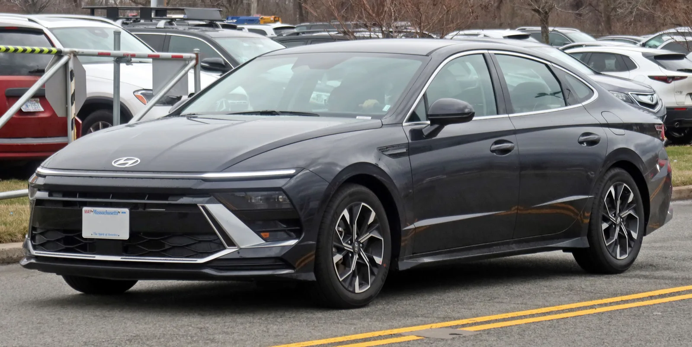
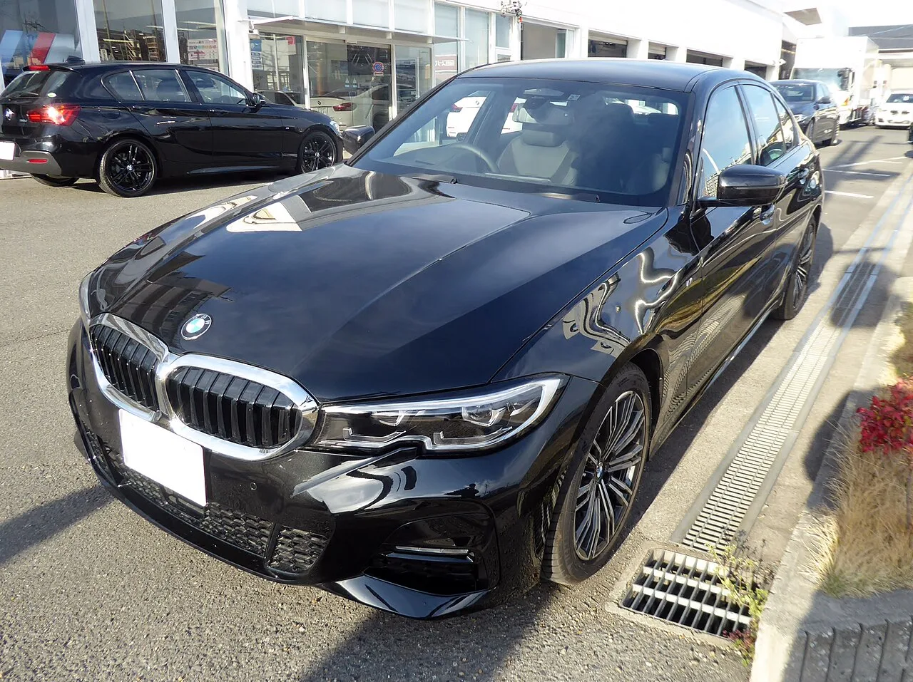
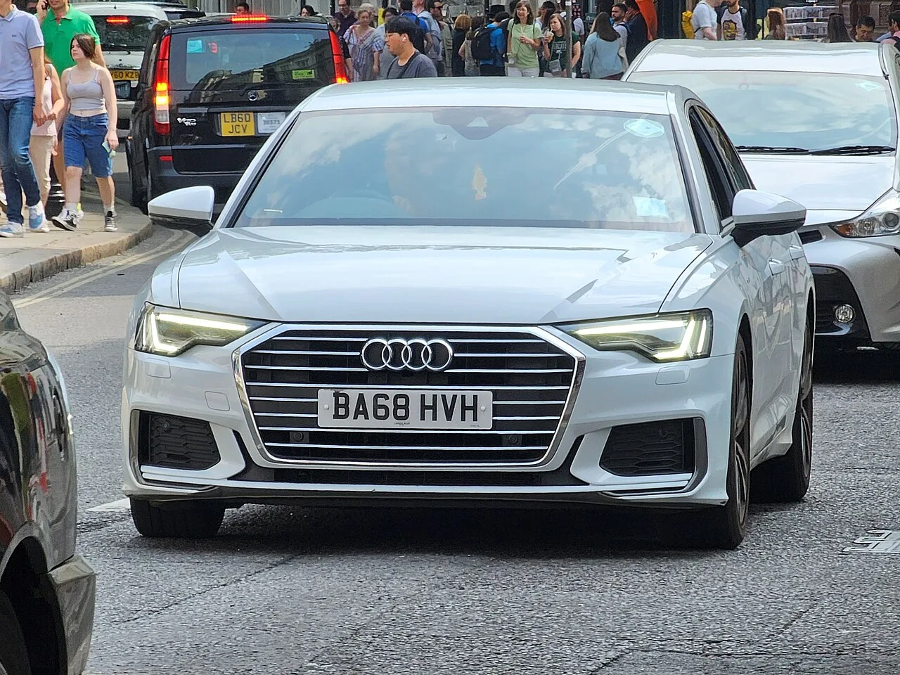
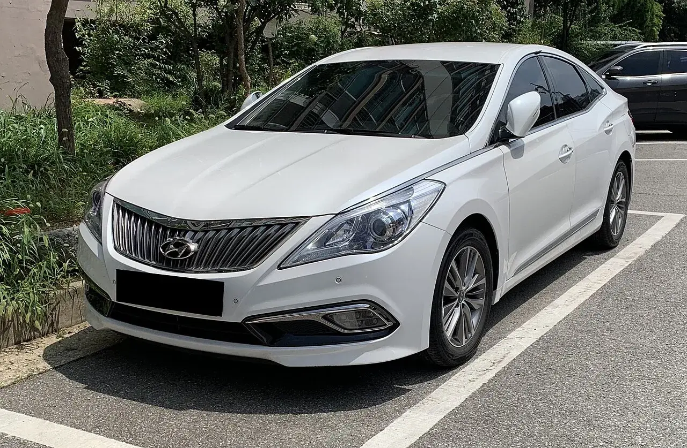

▲ 2026년 상반기 중고차 실거래는 111만5,333대 — 그중 가장 많이 팔린 모델은 무엇이었을까 ⓒ CarPrism (AI 생성 이미지)
중고차 사이트를 열면 결국 비슷한 차들이 보인다. 그랜저, 카니발, 아반떼, 그리고 수입차 코너의 E클래스와 5시리즈. "남들이 많이 사는 차"라는 건 매물이 많고, 비교하기 쉽고, 되팔기도 쉽다는 뜻이다.
그렇다면 2026년 상반기 실제로 가장 많이 팔린 중고차는 무엇이었을까. 이 기사는 임의로 순위를 매기지 않았다. 공개된 판매 데이터를 기준으로 삼고, 집계 방식이 다른 자료들과 나란히 놓아 어디서 차이가 나는지까지 짚었다.
1. 순위는 어떻게 정했나 — 기준과 출처
이 기사의 주 기준은 KB차차차가 공개한 '2026년 상반기 결산' 데이터다. KB차차차는 2026년 1월부터 6월까지 자사 거래 데이터를 바탕으로 국산·수입 중고차 판매량 TOP5와 모델별 조회수를 함께 발표했다. 이 기사의 '베스트 10'은 국산 TOP5와 수입 TOP5를 묶은 것이다.
📍 읽기 전에 알아둘 세 가지
① 국산·수입 분리 집계다. 수입 1위 E클래스(4,702대)가 국산 6위 이하 모델보다 많이 팔렸다는 뜻은 아니다. 국산 6~10위는 발표되지 않았다.
② 모델 단위 집계다. 그랜저 HG·IG·GN7처럼 여러 세대가 하나로 합쳐져 있다.
③ KB차차차 플랫폼 기준이다. 전국 이전등록 전체가 아니므로, 아래에서 카이즈유데이터연구소 실거래 통계와 따로 비교했다.
| 구분 | 순위 | 모델 | 판매량 | 평균 판매시세 | 조회수 |
|---|---|---|---|---|---|
| 국산 | 1 | 현대 그랜저 | 1만5,366대 | 2,550만 원 | 24만3,615건 |
| 2 | 기아 카니발 | 1만2,093대 | 2,889만 원 | 13만7,338건 | |
| 3 | 현대 아반떼 | 1만1,988대 | 1,603만 원 | 17만4,398건 | |
| 4 | 기아 모닝 | 9,196대 | 882만 원 | 8만4,835건 | |
| 5 | 현대 쏘나타 | 9,100대 | 1,769만 원 | 14만1,983건 | |
| 수입 | 1 | 벤츠 E클래스 | 4,702대 | 4,028만 원 | 7만6,316건 |
| 2 | BMW 5시리즈 | 3,776대 | 4,276만 원 | 7만888건 | |
| 3 | 벤츠 S클래스 | 1,950대 | 9,883만 원 | 3만9,042건 | |
| 4 | BMW 3시리즈 | 1,695대 | 3,549만 원 | 4만2,043건 | |
| 5 | 아우디 A6 | 1,649대 | 3,549만 원* | 2만4,862건 |
* 판매량·평균시세·조회수 모두 KB차차차 발표치. 아우디 A6의 평균시세는 발표 원문(KB의 생각·KB차차차 매거진 모두)에 BMW 3시리즈와 같은 3,549만 원으로 표기돼 있어 그대로 옮겼다. 다른 값을 인용한 매체는 확인되지 않았다. 평균시세는 여러 연식·트림이 섞인 값이므로 개별 매물 가격과는 차이가 크다.
2. 자료마다 1위가 다르다 — 세 가지 통계 비교
같은 상반기인데도 "가장 많이 팔린 중고차"는 자료마다 다르다. 집계 대상(플랫폼 vs 전체 이전등록)과 단위(모델 통합 vs 세대 분리)가 다르기 때문이다.
| 자료 | 기준·기간 | 국산 상위 | 수입 상위 |
|---|---|---|---|
| KB차차차 (이 기사 주 기준) | 자사 플랫폼 판매량, 모델 통합 2026년 1~6월 | 그랜저 → 카니발 → 아반떼 | E클래스 → 5시리즈 → S클래스 |
| 카이즈유데이터연구소 | 전국 실거래(이전등록), 세대 분리 2026년 8월 | 모닝(TA) 3,296대 → 뉴 레이 3,294대 → 그랜저(HG) 2,999대 | E클래스(5세대) 1,615대 → 5시리즈(7세대) 997대 → 테슬라 모델 Y 771대 |
| 오토인사이드 (오토핸즈 인증중고차) | 자사 판매 비중 2026년 상반기 | 더 올 뉴 G80 4.9% → 더 뉴 QM6·더 뉴 그랜저 각 4.3% → 디 올 뉴 그랜저 3.9% → K8 3.4% → 쏘나타(DN8) 3.1% | — |
📍 왜 이렇게 다를까
세대를 쪼개서 세면 경차가 올라온다. 카이즈유 통계는 그랜저를 HG·IG·GN7로 나눠 집계하기 때문에 표가 분산되지만, 모닝(TA)·레이처럼 한 세대가 오래 팔린 경차는 단일 항목으로 크게 잡힌다. 반대로 KB차차차처럼 모델 단위로 합치면 여러 세대가 누적된 그랜저·카니발이 유리하다. 오토인사이드처럼 인증중고차 플랫폼은 비교적 최근 연식의 준대형 세단·SUV 비중이 높게 나온다. 어떤 자료든 "기준"을 먼저 확인해야 하는 이유다.
3. 국산 1위 현대 그랜저 — 판매량·조회수 모두 1위

▲ 6세대 그랜저(IG) 부분변경 모델. 중고차 시장에서는 HG·IG·GN7 세 세대가 동시에 활발히 거래된다 ⓒ Benespit, CC BY-SA 4.0, Wikimedia Commons
그랜저는 2026년 상반기 KB차차차에서 1만5,366대가 팔려 국산 1위에 올랐다. 조회수도 24만3,615건으로 1위다. 평균 판매시세는 2,550만 원이었다.
인기의 핵심은 선택지의 폭이다. 5세대(HG), 6세대(IG), 2022년 11월 출시된 7세대(GN7)가 모두 시장에 풀려 있어 예산에 맞춰 세대를 고를 수 있다. 카이즈유 8월 실거래 통계에서도 그랜저(HG) 단일 세대만 2,999대로 국산 3위였다. 출시 10년이 넘은 HG가 여전히 이만큼 거래된다는 건, 준대형 세단을 부담 없는 가격에 원하는 수요가 두텁다는 뜻이다.
✅ 그랜저 구매 체크포인트
· HG·IG 가솔린(세타2 GDi 엔진): 현대·기아는 2019년 10월 세타2 GDi·세타2 터보 GDi 엔진 탑재 2010~2019년형 차량(그랜저 HG/IG 포함)에 엔진 평생보증을 도입했다. 조건은 엔진 진동감지센서(KSDS) 소프트웨어 업데이트 — 매물이 업데이트를 받았는지 확인할 것
· GN7 하이브리드: 2026년 8월 하이브리드 통합 제어기 소프트웨어 결함으로 그랜저 하이브리드 14만1,825대 리콜이 발표됐다(2023년 2월 8일~2026년 1월 6일 제작분). 시정조치 완료 여부 확인 필수
· 세대가 섞인 만큼 같은 가격이라도 연식·주행거리 편차가 크다 — 평균시세보다 개별 매물 비교가 우선
그랜저 하이브리드 리콜의 결함 내용과 대상 확인 방법은 이전 기사에서 자세히 다뤘다. 그랜저·아반떼 하이브리드 리콜 기사 바로가기
4. 국산 2위 기아 카니발 — TOP5 중 평균시세 최고

▲ 4세대 카니발(KA4) 부분변경 모델. 카니발은 국산 TOP5 가운데 평균 판매시세가 가장 높았다 ⓒ Ethan Llamas, Wikimedia Commons (CC BY-SA 4.0)
카니발은 1만2,093대로 국산 2위, 평균 판매시세는 2,889만 원으로 국산 TOP5 중 가장 높았다. KB차차차는 높은 공간 활용성과 탄탄한 수요를 인기 배경으로 꼽았다. 국산 대형 MPV 시장에서 카니발을 대체할 선택지가 많지 않다는 점도 중고 수요를 받쳐준다.
다만 시세 흐름은 약세다. 엔카닷컴 월간 시세(2023년식·6만km·무사고 기준)에서 카니발 4세대 9인승은 8월 -3.05%, 9월(9인승 프레스티지) -1.78%로 두 달 연속 하락했다. 사는 입장에서는 나쁘지 않은 흐름이다. 한편 조회수(13만7,338건)는 판매량 3위 아반떼, 5위 쏘나타보다 적었다 — 카니발은 "구경"보다 "필요해서 사는" 차에 가깝다는 해석이 가능하다.
✅ 카니발 구매 체크포인트
· 4세대(KA4) 대규모 리콜: 2026년 3월 국토교통부가 카니발 20만1,841대에 대해 저압연료라인 결함 리콜을 발표했다. 외기온 변화에 따른 호스 수축·팽창으로 연료가 샐 수 있어 주행 중 시동 꺼짐·화재 위험이 있다는 내용. 개선품 교환 여부를 반드시 확인
· 7·9·11인승 구분: 버스전용차로 이용 조건이 인승·탑승 인원에 따라 다르므로 용도에 맞는 인승 선택
· 디젤 매물: 요소수(SCR) 시스템과 배출가스 관련 부품 정비 이력 확인
9인승과 11인승의 차이, 버스전용차로 조건은 별도 기사에서 정리했다. 카니발 9인승 vs 11인승 비교 바로가기
5. 국산 3위 현대 아반떼 — 1,600만 원대의 '첫 차' 공식

▲ 7세대 아반떼(CN7). 8세대 출시 이후에도 중고차 시장의 주력은 CN7과 6세대(AD)다 ⓒ Wikimedia Commons
아반떼는 1만1,988대, 평균 1,603만 원으로 국산 3위다. 판매량은 카니발보다 조금 적었지만 조회수는 17만4,398건으로 국산 2위였다. 사회초년생의 첫 차, 출퇴근용 세컨드카로 가장 먼저 검색되는 모델이라는 뜻이다.
중고차 시장의 주력은 6세대(AD)와 7세대(CN7)다. CN7은 1.6 가솔린, 1.6 LPi, 1.6 하이브리드, 고성능 N까지 파워트레인이 다양해 같은 아반떼라도 성격과 가격이 크게 갈린다. 2026년 8세대(CN8)가 출시되면서 구형 CN7 매물이 늘어날 가능성도 지켜볼 만하다.
✅ 아반떼 구매 체크포인트
· 하이브리드: 구동 배터리 보증 기간과 정비 이력 확인. 2026년 8월 리콜(하이브리드 통합 제어기, 아반떼 하이브리드 2만6,356대) 대상 여부도 조회
· LPi 모델: 렌터카·법인 이력이 있는 경우가 많으므로 용도 변경 이력 확인
· 수요가 많은 만큼 사고 이력 축소 고지 사례에 주의 — 성능·상태점검기록부를 꼼꼼히
6. 국산 4위 기아 모닝 — 유일한 '1,000만 원 이하'

▲ 3세대 모닝(JA) 부분변경 모델. 카이즈유 세대별 실거래 통계에서는 2세대 모닝(TA)이 국산 1위를 지키고 있다 ⓒ 기아
모닝은 9,196대, 평균 882만 원으로 국산 4위다. TOP5 가운데 유일하게 평균 판매시세가 1,000만 원을 밑돈다.
KB차차차에서는 4위지만, 카이즈유 전국 실거래 통계에서는 사정이 다르다. 세대별로 세면 모닝(TA)이 2026년 6월 3,574대, 8월 3,296대로 국산 1위다. 개인 간 직거래나 소규모 매매상 거래가 많은 저가 경차는 대형 플랫폼 통계보다 전체 이전등록 통계에서 더 크게 잡히는 경향이 있다.
✅ 모닝 구매 체크포인트
· 2세대(TA, 2011~2017)는 연식이 오래돼 주행거리·소모품 교환 이력이 가격보다 중요
· 저가 매물일수록 침수·사고 이력을 보험개발원 카히스토리 등으로 교차 확인
· 경차 세제·통행료·공영주차장 혜택은 차량 요건과 보유 차량 수에 따라 달라지므로 본인 조건 확인
경차가 왜 감가 방어에 강한지, 3분기 시장 흐름은 별도 기사에서 분석했다. 3분기 중고차 시장 분석 바로가기
7. 국산 5위 현대 쏘나타 — 판매는 5위, 관심은 3위

▲ 8세대 쏘나타(DN8) 부분변경 모델 '디 엣지'. 오토인사이드 상반기 판매 비중에서도 쏘나타(DN8)는 3.1%로 상위권이었다 ⓒ Wikimedia Commons
쏘나타는 9,100대, 평균 1,769만 원으로 국산 5위다. 판매량은 4위 모닝과 거의 같지만, 조회수는 14만1,983건으로 카니발(13만7,338건)보다 많았다. 아반떼와 그랜저 사이에서 "한 체급 위 세단을 합리적인 가격에" 찾는 수요가 꾸준하다는 방증이다.
주력 매물은 7세대(LF)와 8세대(DN8)이며, DN8은 2023년 부분변경 모델 '디 엣지'로 디자인이 크게 바뀌었다. 같은 DN8이라도 전·후기형 가격 차이가 크다.
✅ 쏘나타 구매 체크포인트
· LF 가솔린(세타2 GDi): 쏘나타 LF도 세타2 GDi 엔진 평생보증 대상 차종에 포함됐다 — KSDS 업데이트 이력 확인
· LPi 모델: 택시·렌터카 출신 매물이 섞여 있으므로 자동차등록원부로 용도 이력 확인
· 전기형 DN8과 '디 엣지'의 시세 차이를 감안해 같은 예산의 IG 그랜저·K5와도 비교해볼 것
8. 수입 1위 벤츠 E클래스 — 국산 못지않은 '국민 수입차'

▲ 5세대 E클래스(W213) 전기형(2020년 부분변경 이전) 모델. 카이즈유 8월 실거래에서 E클래스 5세대는 1,615대로 수입차 1위였다 ⓒ Wikimedia Commons
E클래스는 4,702대, 평균 4,028만 원으로 수입 1위다. 조회수도 7만6,316건으로 수입 1위. 카이즈유 전국 실거래(8월)에서도 E클래스 5세대(W213)가 1,615대로 수입 1위여서, 자료와 관계없이 1위가 일치하는 유일한 모델이다.
눈여겨볼 건 시세 흐름이다. 엔카닷컴 기준 W213 E350 4MATIC은 2026년 8월 전월 대비 -4.10%로 수입차 평균 하락률(-0.99%)의 4배를 넘었고, 9월에도 E350 4MATIC 익스클루시브가 -3.33% 떨어졌다. 2024년 1월 6세대(W214)가 국내 출시되면서 구형이 된 W213은 사는 쪽에서 보면 가격 조건이 좋아지고 있다.
✅ E클래스 구매 체크포인트
· 리콜 이력: 2021년 E300 4MATIC 등 153개 차종 25만2,065대가 비상통신시스템(eCall) 소프트웨어 오류로 리콜됐다. 같은 해 E300 2만9,769대는 연비 과다 표시가 확인돼 경제적 보상이 결정됐다
· W213 전·후기형(2020년 부분변경 전후)에 따라 실내 디스플레이·ADAS 사양 차이가 크다
· 수입차는 공식 서비스센터 정비 이력과 보증 잔여 기간이 가격에 큰 영향을 준다
E클래스 시세가 유독 크게 빠진 배경은 별도 기사에서 짚었다. E클래스 중고 시세 하락 기사 바로가기
9. 수입 2위 BMW 5시리즈 — E클래스와 합쳐 8,000대 돌파

▲ 7세대 BMW 5시리즈(G30). 카이즈유 8월 실거래에서 5시리즈 7세대는 997대로 수입차 2위였다 ⓒ Wikimedia Commons
5시리즈는 3,776대, 평균 4,276만 원으로 수입 2위다. E클래스와 합치면 8,000대를 넘는다. 평균 판매시세는 오히려 E클래스보다 약 250만 원 높았다.
시세도 상대적으로 버티고 있다. 엔카닷컴 9월 시세에서 520i M 스포츠는 +0.29%로, 같은 달 E350 4MATIC 익스클루시브(-3.33%)와 대조를 이뤘다. 중고 시장 주력은 7세대(G30)이고, 2023년 출시된 8세대(G60) 매물도 조금씩 늘고 있다.
✅ 5시리즈 구매 체크포인트
· 디젤 EGR 리콜: 2018년 주행 중 화재 문제로 520d 등 42개 차종 10만6,317대가 EGR(배기가스 재순환장치) 리콜 대상이 됐다(520d만 3만5,115대). 구형 디젤 매물은 리콜 이행 여부를 자동차리콜센터에서 확인
· 520i·530i·520d·530e 등 파워트레인별 유지비 차이가 크다 — 특히 PHEV(530e)는 배터리 상태 점검 필요
· M 스포츠 패키지 여부에 따라 같은 연식도 시세가 달라진다
10. 수입 3위 벤츠 S클래스 — 평균 1억 원에 육박하는데 3위

▲ 7세대 S클래스(W223). 중고 시장에서는 이전 6세대(W222)도 함께 주력으로 거래된다. S클래스의 평균 판매시세는 9,883만 원으로 베스트 10 중 가장 높았다 ⓒ Wikimedia Commons
S클래스는 1,950대, 평균 9,883만 원으로 수입 3위다. 평균 판매시세가 1억 원에 근접하는데도 3시리즈·A6보다 많이 팔렸다는 점이 눈에 띈다. 신차 대비 감가가 큰 플래그십 세단을 중고로 사려는 수요가 꾸준하다는 뜻이다.
다만 조회수는 3만9,042건으로 판매량 4위 3시리즈(4만2,043건)보다 적었다. 관심 있는 사람 수는 적지만, 살 사람은 확실히 사는 차다. 중고 매물은 6세대(W222)와 7세대(W223)가 주력이며, 세대 간 가격 차이가 매우 크다.
✅ S클래스 구매 체크포인트
· 에어서스펜션 등 고가 부품의 정비·교환 이력을 확인 — 수리비 단위가 국산차와 다르다
· 법인 명의·리스 승계 매물이 많으므로 소유·용도 이력과 잔여 계약 조건 확인
· 보증이 끝난 차량은 연장 보증 상품 가입 가능 여부를 가격과 함께 따져볼 것
11. 수입 4위 BMW 3시리즈 — 수입차 입문의 정석

▲ 7세대 BMW 3시리즈(G20) 부분변경 모델. 중고 매물에는 6세대(F30)도 많다. 평균 판매시세 3,549만 원으로 수입 TOP5 중 가장 낮은 가격대(A6와 동일 표기)를 형성했다 ⓒ Tokumeigakarinoaoshima, Wikimedia Commons (CC BY-SA 4.0)
3시리즈는 1,695대, 평균 3,549만 원으로 수입 4위다. KB차차차는 3시리즈를 "BMW 브랜드 입문 모델"로 소개하며 비교적 합리적인 가격대를 형성했다고 분석했다. 조회수는 4만2,043건으로 판매량 3위 S클래스보다 많다 — 수입차를 처음 고민하는 수요가 몰리는 모델이다.
주력 매물은 6세대(F30)와 7세대(G20)다. 같은 예산이라면 국산 그랜저 상위 트림과도 비교 대상이 되는 가격대이므로, 유지비까지 함께 계산해야 한다.
✅ 3시리즈 구매 체크포인트
· 320d 등 디젤: 2018년 EGR 리콜에서 320d는 1만4,108대가 대상이었다 — 리콜 이행 여부 확인
· 타이어(런플랫 여부)·브레이크 등 소모품 교체 비용이 국산 준중형보다 높다
· 공식 서비스센터 외 정비 이력이 많다면 주요 부품 교환 내역을 요청할 것
12. 수입 5위 아우디 A6 — 독일 3사 비즈니스 세단의 대안

▲ 8세대 아우디 A6(C8). 2026년 4월 9세대가 국내 출시됐지만 중고 매물은 대부분 C8과 이전 C7이다. 수입 TOP5는 모두 독일 브랜드 세단이었다 ⓒ Wikimedia Commons
A6는 1,649대로 수입 5위다(평균 판매시세는 발표 원문상 3,549만 원). 조회수는 2만4,862건으로 수입 TOP5 중 가장 적지만, 판매량은 4위 3시리즈와 불과 46대 차이다. E클래스·5시리즈보다 상대적으로 낮은 가격에 같은 체급을 원하는 수요가 A6로 향하는 것으로 볼 수 있다. 2026년 4월에는 9세대 A6가 국내 출시(40 TFSI 컴포트 6,519만 원부터)되면서 C8은 구형이 됐다.
이로써 수입 TOP5는 전부 독일 브랜드 세단이 차지했다. KB차차차는 이를 두고 브랜드 가치와 잔존가치, 검증된 상품성이 수입 중고차 시장의 주요 선택 기준으로 작용한 결과라고 분석했다.
✅ A6 구매 체크포인트
· 7세대(C7)와 8세대(C8)는 실내 구성(터치 디스플레이 중심)과 파워트레인 구성이 크게 다르다
· 디젤(TDI)·가솔린(TFSI)·콰트로 여부에 따라 세금·유지비·시세가 달라지므로 트림명을 정확히 확인
· 차량 번호로 자동차리콜센터(car.go.kr)에서 미이행 리콜이 없는지 조회
13. 숫자로 본 2026년 중고차 시장 트렌드

▲ 5세대 그랜저(HG). 출시 10년이 넘었지만 2026년 8월 카이즈유 실거래에서 단일 세대로 2,999대가 거래됐다 ⓒ Benespit, CC BY-SA 4.0, Wikimedia Commons
베스트 10의 공통점은 "세단 강세"다. 10개 모델 중 카니발(MPV)과 모닝(경차)을 제외한 8개가 세단이다. 전국 실거래 통계도 같은 흐름을 보여준다.
| 차종 | 거래 대수 | 연료 | 거래 대수 |
|---|---|---|---|
| 세단 | 6만4,705대 | 휘발유 | 9만1,036대 |
| SUV | 5만1,398대 | 경유 | 3만6,296대 |
| 해치백 | 1만9,321대 | 하이브리드 | 1만1,052대 |
| RV | 1만5,124대 | LPG | 1만439대 |
| 픽업트럭 | 2,788대 | 전기 | 6,443대 |
📍 2026년 중고차 시장, 다섯 가지 흐름
① 전체 거래는 감소 — 상반기 실거래 111만5,333대로 전년 동기(114만3,674대) 대비 -2.5%. 8월도 18만2,431대로 전월 대비 -7.6%
② 세단이 SUV보다 많이 거래 — 8월 세단 6만4,705대 vs SUV 5만1,398대. 다만 상반기 증감률은 SUV +5.4%, 세단 -5.9%로 격차는 좁혀지는 중
③ 친환경차만 성장 — 카이즈유 상반기 기준 전기차 +57.0%, 하이브리드 +26.0%, 반면 경유 -10.8%, LPG -11.2%
④ 테슬라의 약진 — 수입 브랜드 중 상반기 거래 증가율 1위(+50.5%), 8월에는 모델 Y가 771대로 수입 모델 3위. 엔카 시세에서도 모델 Y·모델 3는 8·9월 두 달 연속 상승
⑤ 국산 vs 수입 — 8월 국산 브랜드별로는 기아 4만8,607대, 현대 4만4,751대가 양강. 수입은 벤츠·BMW의 독일 세단이 여전히 중심
흥미로운 점은 베스트 10에 SUV가 하나도 없다는 것이다. 신차 시장에서는 SUV 비중이 높지만, 중고 시장에서는 매물이 오래 누적된 세단이 여전히 거래량을 이끈다. 다만 전기차·하이브리드 거래가 빠르게 늘고 있어, 1~2년 뒤 순위표는 지금과 꽤 달라질 가능성이 있다.
세대별로 가격이 어떻게 갈리는지 궁금하다면, 중형 SUV 대표 모델 쏘렌토 사례를 참고할 만하다. 쏘렌토 세대별 중고 시세 비교 바로가기
14. 인기 모델일수록 더 꼼꼼히 — 중고차 구매 체크리스트
매물이 많은 인기 모델은 비교가 쉬운 대신, 상태 편차도 크다. KB차차차도 같은 연식이라도 주행거리·사고 이력·정비 이력·옵션 구성에 따라 시세 차이가 크게 발생한다고 강조했다.
⚠️ 계약 전 최종 체크리스트
· 성능·상태점검기록부에서 사고·침수·골격 판정 칸 확인
· 보험개발원 카히스토리로 보험 처리 이력과 소유자 변경 횟수 교차 확인
· 자동차리콜센터(car.go.kr)에서 미이행 리콜 조회 — 카니발 연료라인, 그랜저·아반떼 하이브리드 제어기, 세타2 KSDS 등
· 자동차등록원부로 렌터카·택시·법인 등 용도 이력 확인
· 하이브리드는 배터리 보증 기간, 디젤은 요소수·배출가스 부품 상태 확인
· 현대·기아·제네시스는 중고 구매 시 파워트레인 보증 조건이 달라진다는 점 기억
· 매매업자 구매라면 2026년 7일 환불제 적용 조건 확인
성능·상태점검기록부에서 먼저 봐야 할 칸은 따로 정리해뒀다. 성능점검기록부 읽는 법 바로가기
계약 후 문제가 생겼을 때 쓸 수 있는 7일 환불제의 조건도 함께 확인해두자. 중고차 7일 환불제 바로가기
15. 요약
KB차차차의 2026년 상반기(1~6월) 판매량 기준으로 국산은 그랜저·카니발·아반떼·모닝·쏘나타, 수입은 E클래스·5시리즈·S클래스·3시리즈·A6가 TOP5에 올랐다. 그랜저(1만5,366대)와 E클래스(4,702대)는 판매량과 조회수 모두 1위였고, 평균 판매시세는 모닝 882만 원부터 S클래스 9,883만 원까지 넓게 분포했다.
기준을 바꾸면 순위도 바뀐다. 세대별로 집계하는 카이즈유 전국 실거래 통계에서는 모닝(TA)·레이 같은 경차가 국산 1~2위를 차지했고, 인증중고차 플랫폼 오토인사이드에서는 제네시스 G80이 1위였다. 수입 1위 E클래스만 자료와 관계없이 일치했다.
시장 전체로는 거래가 줄었고 거래량은 여전히 세단이 SUV보다 많지만(증감률로는 SUV가 추격 중), 전기차·하이브리드만 빠르게 성장하고 있다. 인기 모델은 매물이 많아 비교가 쉽지만 상태 편차도 크므로, 순위보다 리콜 이행 여부·용도 이력·정비 기록을 먼저 확인하는 것이 좋은 중고차를 고르는 지름길이다.